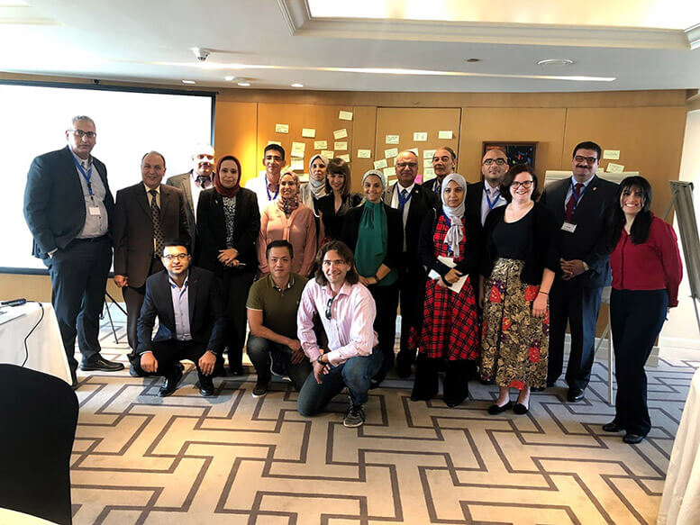
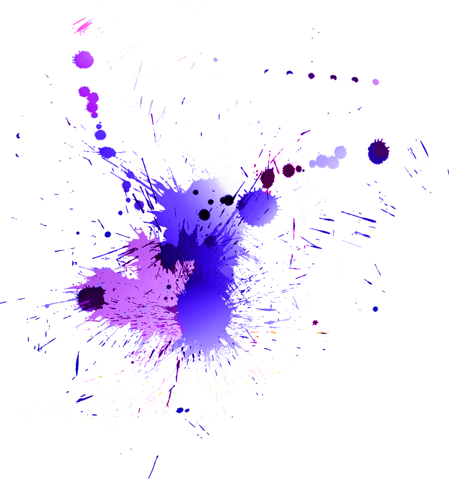
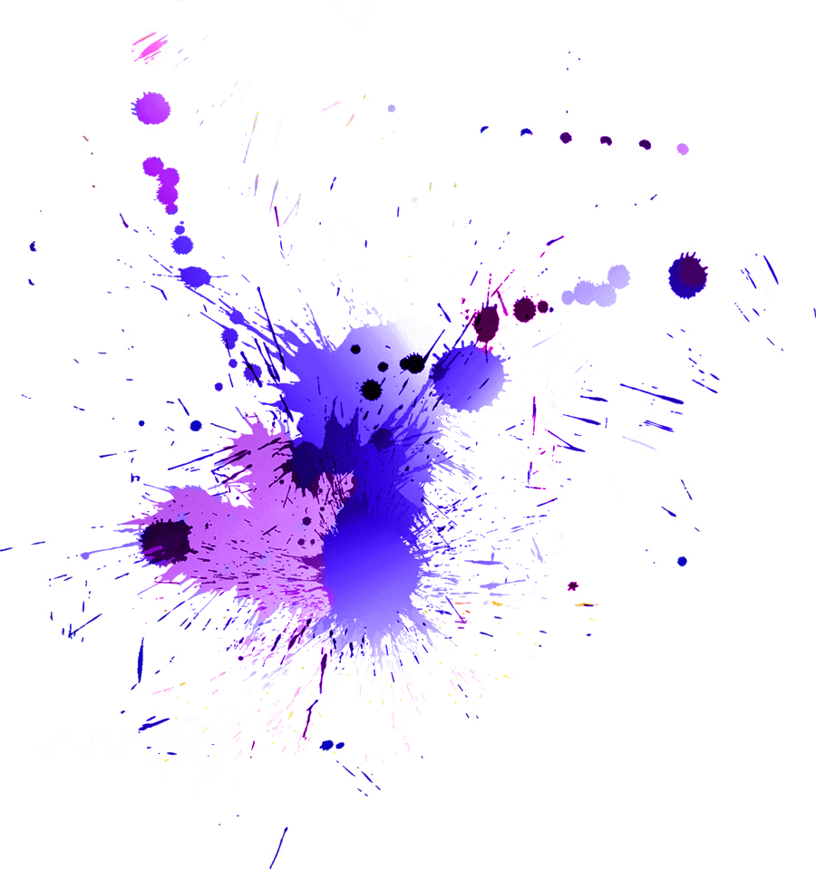

Development
Working together with the Royal Academy of Engineering, Boyan is part of an experienced team delivering a series of global events aimed to help top researchers commercialise their work. Digital Ecosystems was Masters course co-written and delivered by Boyan as part of a Carnegie Mellon program at the Sofia University. The lecture series adapted Dr. Edward Deming's 14 key principles to technological innovation. Boyan took part in a hundred and twenty shows for the Prince's Trust supported 'Blue Skies' program.
 
